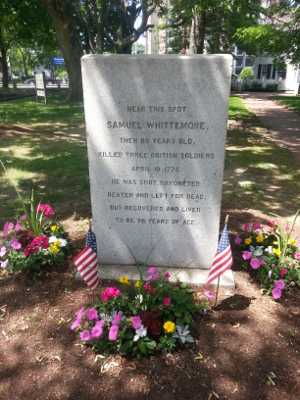

About Samuel Whittemore
Samuel Whittemore served in the British Army for many years, but on April 19, 1775, at the age of 80, he was on the side of the American Revolution.
In the center of Arlington, a marker is dedicated to his bravery, which also tells his story on that day. It reads:
Near this spot,
Samuel Whittemore,
then 80 years old,
killed three British soldiers
April 19, 1775.
He was shot, bayonetted,
beaten and left for dead,
but recovered and lived
to be 98 years of age.
Having received one gunshot wound and 13 bayonet wounds, Dr. Nathaniel Tufts thought there was no reason to treat him, as Whittemore was certain to die. However, at the urging of his family, Whittemore was bandaged and sent home, where he recovered completely and lived another 18 years.
If I can only be the instrument of killing one of my country's foes, I shall die in peace!
Samuel Whittemore